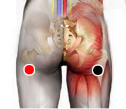

Moraxella Catarrhalis
Par
escotadura ciática - escotadura ciática
ceja - ceja
arco cigomático - a. cigomático
estómago - a. corazón

Generalidades:
Síntomas respiratorios: tos, congestión nasal, estornudo, rinorrea, odinofacia, dolor, malestar, fiebre.
Bacteria con forma de diplococo; aeróbica, gram negativa, oxidasa positiva. Antes conocida como Branhamella catarrhalis, se encuentra ampliamente diseminada en la población humana. Provoca otitis, bronquitis, laringuitis y sinusitis, en algunos casos (fumadores, inmunodeprimidos) puede incluso causar neumonía o EPOC.
Transmisión
Se transmite por secreciones respiratorias con mayor contagio en invierno.